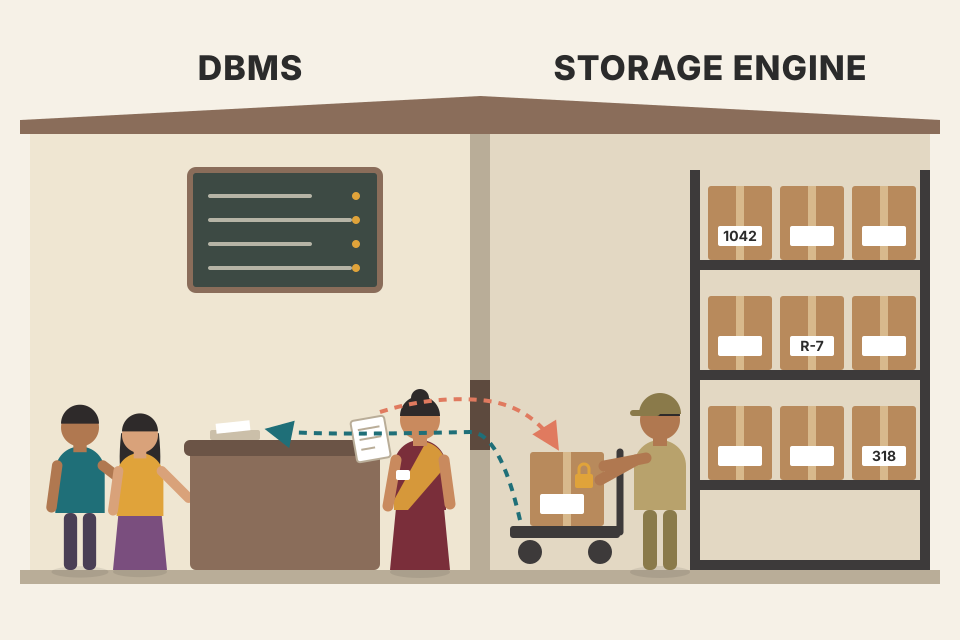
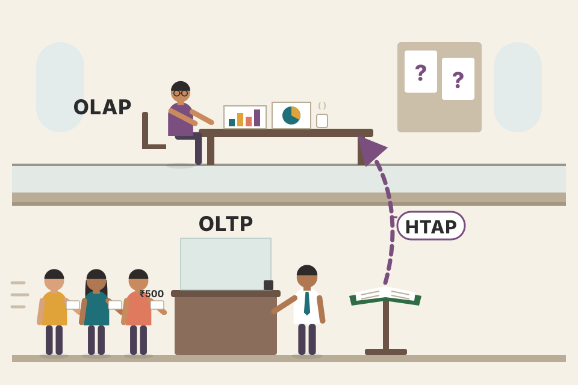
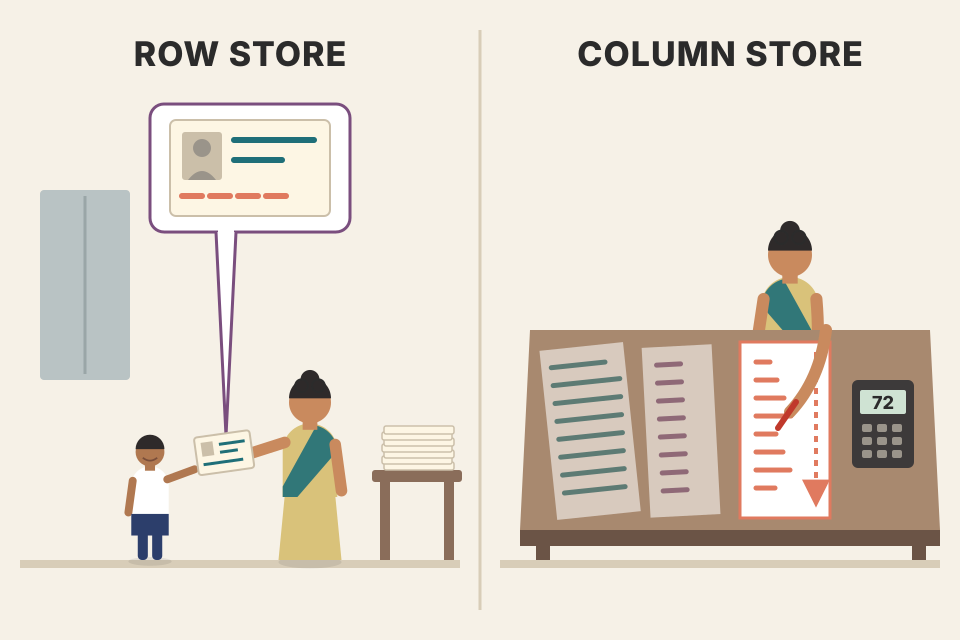
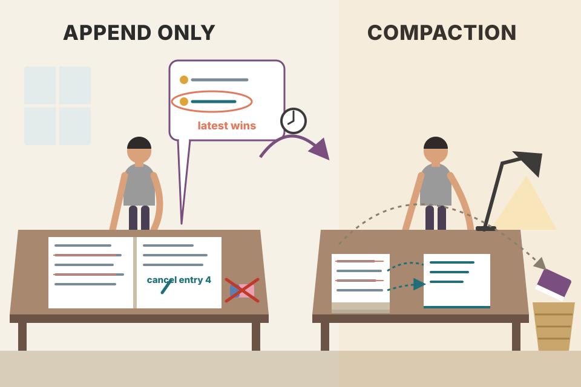

This page covers the Part I opening (storage engines, how to compare databases, why everything is a trade-off) and all of Chapter 1: the layers of a DBMS, memory vs disk, row vs column vs wide-column layout, data files and index files, and the three ideas (buffering, immutability, ordering) that the rest of the book keeps coming back to. Every section has a working model you can poke. Numbers marked "modelled" come from a stated cost model, numbers marked "measured" are counted or timed right here in your browser on simulated data, and anything not from the book sits in a dashed "Beyond the book" box.
Petrov starts with the storage engine (the part that actually holds the bytes), then zooms out to the whole database, then zooms back in to how data is physically arranged and found. Each row below is one step; each box is one section.
A database's main job is to store data reliably and hand it back when asked. Apps use a database as their shared source of truth, so each new app doesn't have to invent its own way of saving and organising information, and developers can spend their time on application logic instead of infrastructure. (Petrov uses "database system" and "database" as short forms of "database management system", DBMS.)
A database is built from modules: a transport layer that accepts requests, a query processor that works out the most efficient way to run a query, an execution engine that carries out the operations, and a storage engine (section 05 walks through all of them).
The storage engine (also called the database engine) is the component that stores, retrieves and manages data in memory and on disk. It is meant to be each node's persistent, long-term memory (the book cites Reed's 1978 MIT report, [REED78]). Where the database answers complex queries, the storage engine works at a finer grain and offers a small API: create, update, delete and retrieve records. One way to see it: a DBMS is an application built on top of a storage engine, adding a schema, a query language, indexing, transactions and more.
To stay flexible, keys and values are just arbitrary byte sequences. What they mean, and how they sort, is decided by the higher layers. One table might use a 32-bit integer key and another an ASCII string key; to the engine both are just serialized entries.
Many engines were written on their own and later embedded into databases: BerkeleyDB, LevelDB and its descendant RocksDB, LMDB and its descendant libmdbx, Sophia, HaloDB and others. Pluggable engines let database builders start from an existing engine and focus on the other subsystems. The clean split also lets you swap engines for a use case: MySQL has several (InnoDB, MyISAM, and RocksDB in the MyRocks distribution); MongoDB can switch between WiredTiger, In-Memory and the now-deprecated MMAPv1.

A storage engine is a warehouse that stores sealed boxes on labelled shelves. It can put a box away, fetch it by label, replace it or throw it out, but it never opens a box and doesn't know whether the label is a number or a name. The shop at the front (the DBMS) knows what the boxes contain, takes customers' orders in SQL, and decides how the labels should be ordered on the shelves.
An ordered engine (a B-Tree or an LSM Tree, Chapters 2 and 7) keeps keys sorted by comparing their raw bytes left to right, like memcmp. That byte order matches the numeric order only if the higher layer picks an order-preserving encoding. Little-endian puts the least significant byte first, so 256 sorts before 5. Plain big-endian two's complement sorts negatives after positives, because their first byte starts with a 1 bit. Flipping the sign bit fixes that. ASCII sorts "300" before "5" because it compares character by character. This is exactly why Petrov says sorting semantics belong to the higher layers: the engine just compares bytes; the layer above has to encode keys so that byte order means something.
// The whole API a storage engine offers upward: bytes in, bytes out. type Bytes = Uint8Array; interface StorageEngine { put(key: Bytes, value: Bytes): void; // create or update get(key: Bytes): Bytes | undefined; // retrieve delete(key: Bytes): void; // delete (often a tombstone, see 13) scan(from: Bytes, to: Bytes): Iterable<[Bytes, Bytes]>; // ordered engines only } // The layer above decides what bytes mean, e.g. an order-preserving int32 key: function encodeInt32(v: number): Bytes { const b = new Uint8Array(4); new DataView(b.buffer).setUint32(0, (v ^ 0x80000000) >>> 0); // flip sign, big-endian return b; } const compare = (a: Bytes, b: Bytes) => { // what the engine actually does for (let i = 0; i < Math.min(a.length, b.length); i++) if (a[i] !== b[i]) return a[i] - b[i]; return a.length - b.length; };
ORDER BY and range scans cheap.Notes/syllabus.html) lists "B-Trees / B+ Trees: PostgreSQL indexes, MySQL InnoDB" and "LSM Trees: LevelDB, RocksDB, Cassandra" as the DSA-to-real-systems bridge; these are the engines named here.Picking a database has long-term consequences. If it turns out to be a bad fit (performance, consistency or operational trouble), it's better to find out early, because moving to another system can be hard and may need big changes in application code. Every database has strengths and weaknesses, so spend time up front building confidence that it fits your needs.
Comparing databases by their components (which storage engine, how data is shared, replicated and distributed), their rank (a popularity score from consultancies such as ThoughtWorks or sites like DB-Engines or Database of Databases) or their implementation language (C++, Java, Go…) leads to wrong, premature conclusions. Those methods are only good for a very coarse choice, like HBase versus SQLite. Even a shallow understanding of how each database works inside gives a better-weighed answer.
Start by defining the goal clearly; even a small bias can invalidate the whole investigation. The best approach is to simulate your workloads against the candidate systems, measure the metrics that matter to you, and compare. Some problems (especially performance and scalability) appear only over time or as data grows, so run long tests in an environment as close to production as possible. This also teaches you how to operate and debug the system and how helpful its community is. Performance often isn't the most important factor: a database that saves data slowly beats one that loses it quickly.
With these answered, build a test cluster and simulate the workload. Most databases ship stress tools for this; if there is no standard stress tool in a database's ecosystem, that may be a red flag. Otherwise use a general-purpose tool or write one. If the tests look good, start reading the database's code: learn its parts and where each component lives. Even a rough map helps you read its log records, understand its configuration and find problems in your app or in the database itself. Using a database as a black box would be nice, but sooner or later a bug, outage or performance regression shows up; knowing the internals lowers business risk and speeds recovery.
YCSB (Yahoo! Cloud Serving Benchmark) is a popular framework with a common set of workloads that can run against different data stores. Like any generic tool, use it carefully: it's easy to draw wrong conclusions. To compare fairly, learn the real conditions your database will face and tailor the benchmark to them.
TPC-C (sidebar): the Transaction Processing Performance Council publishes benchmarks that vendors use to compare and advertise products. TPC-C is an OLTP benchmark: a mix of read-only and update transactions that simulate common application work. It cares about the performance and correctness of concurrent transactions; the main metric is throughput, transactions processed per minute. Transactions must keep the ACID properties plus the benchmark's own rules. It isn't tied to one business, but models actions most OLTP apps need, with tables and entities such as warehouses, stock (inventory), customers and orders; it specifies table layouts, the transactions, the minimum number of rows per table, and durability constraints.
Benchmarks aren't only for comparing databases. They help define and test the details of a service-level agreement (footnote, p26: an SLA is the provider's commitment about service quality, which can cover latency, throughput, jitter, and the number and frequency of failures), understand system requirements, and plan capacity. Finally, a database is a long-term choice: follow new releases, understand what changed and why, have an upgrade strategy, and test new versions before rolling them out (they fix bugs and security issues but can add new bugs, regressions or surprises). A project's past upgrades are a hint: smooth ones don't guarantee smooth future ones, but painful ones suggest the future won't be easy either.
Choosing a database by its DB-Engines rank is like choosing a car by its sales chart. A test drive on your commute, with your load in the boot, for a few weeks, tells you far more. The capacity planner below is the paper version of that test drive: it turns the book's five variables into the book's six questions.
Model assumptions (mine, not the book's): traffic grows at the same rate as data; each write lands on every replica, each read on one; nodes are run at 70% of the capacity you enter; no compression or index overhead. The "ops/s one node can do" number is exactly what you must measure with a stress tool; the planner only shows how much the answer depends on it.
Data now = 50 M × 1,000 B = 50 GB; with 3 replicas, 150 GB → fits in 1 node of 1,000 GB at 70% (700 GB usable). Throughput: reads 20,000/s + writes 5,000/s × 3 replicas = 35,000 node-ops/s; one node at 70% handles 7,000 → 5 nodes. After 12 months at 5%/month, the load is 1.0512 ≈ 1.80× bigger: ≈ 62,855 node-ops/s → 9 nodes, while storage (≈ 269 GB) still fits in one. This cluster is throughput-bound, so the single most important number to measure is how many operations one node really sustains on your workload.
Each of the book's variables feeds one question: record size × count gives "can it hold the data"; read and write rates against per-node capacity give "how many nodes"; growth gives "how do we expand". Replication multiplies writes and storage but not reads, which is why write-heavy workloads hit the node count sooner. The per-node number is the one that only a realistic, long-running test can tell you: a node that does 10,000 ops/s on a 100% read benchmark may do far fewer once compaction, cache misses and real record sizes kick in.
| YCSB core workload | Mix | Feels like |
|---|---|---|
| A · update heavy | 50% read / 50% update | session store |
| B · read mostly | 95% read / 5% update | photo tagging |
| C · read only | 100% read | profile cache |
| D · read latest | 95% read / 5% insert | status updates (newest records hottest) |
| E · short ranges | 95% scan / 5% insert | threaded conversations |
| F · read-modify-write | 50% read / 50% RMW | user record edits |
TPC-C's official metric, tpmC, counts only New-Order transactions completed per minute, while the other four transaction types (Payment, Order-Status, Delivery, Stock-Level) run in the mix alongside. Its database has nine record types. So "transactions per minute" in vendor marketing usually means tpmC, not all transactions. Sources: YCSB wiki "Core Workloads" and workload files (github.com/brianfrankcooper/YCSB); tpc.org TPC-C overview.
Notes/syllabus.html, 2A) lists pgbench and a "pgbench tuning" exercise: that is the "use the database's own stress tool" step from this section.As users we watch how databases behave; as builders we make the choices that cause that behaviour. A storage engine is much harder than a textbook data structure, full of details and edge cases. You must design the physical data layout and organise pointers, choose a serialization format, decide how data will be garbage-collected, fit the engine into the semantics of the whole database, make it work concurrently, and make sure you never lose data, under any circumstances.
Most of these decisions are trade-offs. Petrov's example: store records in insertion order and writes are quick, but returning them in key (lexicographic) order means sorting them before answering. If one engine were best for every use case, everyone would use it; since none is, you choose based on your workloads.
Engines use all sorts of data structures and languages, from low-level C to high-level Java, yet all face the same challenges and constraints. Petrov compares it to city planning: for the same population you can build up (apartments, dense, more traffic in a small area) or build out (houses, spread out, longer commutes). Likewise engines are tuned for different goals: some for low read latency or low write latency, some for density (data stored per node), some for operational simplicity. Full algorithms and further references are listed in each chapter's summary.
Two ways to keep your receipts. Toss each into a shoebox (instant), and on tax day you dump the box and sort everything. Or file each one into an alphabetical folder as it arrives (slower each time), and on tax day you pull out exactly the folder you need. Neither is "right"; it depends whether you file more often than you search.
Measured (counted, not timed) on random keys from the seed above. Unit of work = one record touched, moved or compared. Log: append = 1; range query = read every record + sort the matches. Sorted array: insert = binary search + shift every larger key one slot right; range query = binary search + read the matches. Log scale.
The total work is the same problem paid at different times. The append-only log pays nothing on write and everything on read: each range query must look at all N records because nothing tells it where the keys are. The sorted array pays on every write (on average it shifts half the array) and almost nothing on read (log₂ N to find the start, then exactly the keys asked for). Slide "range queries" to 0 and the log wins by orders of magnitude; slide it up and the sorted array wins. Real engines avoid both extremes: B-Trees (Ch.2) keep order but split the array into pages so a write moves at most one page; LSM Trees (Ch.7) append first and sort later in the background.
N = 10,000, 100 range queries of 100 keys. Log writes: 10,000 units. Log reads: each query reads 10,000 records and sorts ≈ 100 matches (≈ 100 × log₂100 ≈ 664 compares) → about 100 × 10,664 ≈ 1.07 M. Sorted array writes: each insert shifts on average about half of what's already there, ≈ N²/4 ≈ 25 M moves in total. Sorted reads: 100 × (log₂10,000 ≈ 14 + 100) ≈ 11,400. So with few queries the log does far less total work; the readout shows the exact counted numbers for the current seed.
class AppendLog { // insertion order rows: number[] = []; insert(k: number) { this.rows.push(k); } // O(1) range(lo: number, hi: number) { // O(N + k log k) return this.rows.filter(k => k >= lo && k <= hi).sort((a, b) => a - b); } } class SortedArray { // key order rows: number[] = []; lowerBound(k: number) { let a = 0, b = this.rows.length; while (a < b) { const m = (a + b) >> 1; this.rows[m] < k ? a = m + 1 : b = m; } return a; } insert(k: number) { this.rows.splice(this.lowerBound(k), 0, k); } // O(N) shifts range(lo: number, hi: number) { const out = []; // O(log N + k) for (let i = this.lowerBound(lo); i < this.rows.length && this.rows[i] <= hi; i++) out.push(this.rows[i]); return out; } }
The simulation above counts the shifts with a Fenwick tree instead of really splicing, so it can handle 50,000 inserts instantly; the count is identical.
Append-only log: fastest possible writes, but every ordered read is a full scan plus a sort.
B-Trees bound the write cost to a page; LSM Trees batch appends in memory and sort them once per flush, then merge (compaction). Both turn "sort on every read" or "shift on every write" into something logarithmic or amortised.
Databases serve different purposes: some hold temporary hot data, some are long-lived cold storage, some run complex analytical queries, some only allow access by key, some are built for time-series data, and some store large blobs efficiently. The chapter starts with a short classification so the rest of the book has clear scope.
Terms are often confusing without context. Examples Petrov calls out: column stores and wide column stores have little or nothing to do with each other; and it's unclear how clustered and nonclustered indexes relate to index-organized tables. The chapter's goal is to give these precise definitions (sections 10–15 below).
Order of the chapter: DBMS architecture (05), storage medium: memory vs disk (06–07), layout: column vs row (08–12). These two groupings aren't a full taxonomy. Some sources split databases into three categories:
Other labels exist (key-value stores, relational, document-oriented, graph databases). Petrov doesn't define them: he assumes the reader knows them, and the ideas in this book apply across most of them, so a full taxonomy isn't needed. Since Part I is about storage and indexing structures, the chapter then covers how data is organised and how data files relate to index files (13–16), and ends with three techniques used to build efficient storage structures: buffering, immutability and ordering (17).

A bank branch versus the bank's head-office analysts. The teller (OLTP) handles thousands of tiny, predictable requests a minute: "deposit ₹500 to this account". The analyst (OLAP) asks a few huge, unpredictable questions: "average balance by city and age band over five years". HTAP is a branch where the analyst can ask those questions on the live ledger without slowing the tellers down.
The labels describe a shape of work, and each shape pulls the storage layout in a different direction. An OLTP request touches very few rows but most of each row, and it must finish in milliseconds while thousands of others run at the same time. So it wants the whole row in one place and cheap in-place changes. An OLAP query touches a huge number of rows but only a few columns, and nobody minds if it takes seconds. So it wants each column packed together and compressed, and it is happy to read in big sequential sweeps. HTAP has to satisfy both on the same data. It usually does that by keeping two physical copies, which then have to be kept in sync.
A trades table with 1 billion rows × 100 columns × 8 B = 800 GB. OLAP: "average price per symbol" needs 2 columns. A column layout reads 2 × 8 GB = 16 GB. A row layout reads all 800 GB, 50× more. OLTP: "fetch trade #123,456" needs one 800-byte row. A row layout reads it from one 4 KB page. A column layout reads one page from each of 100 column files, 100× more page reads. Same table, opposite winners: this is why the kind of workload has to be decided before the layout (sections 09–11).
| OLTP | OLAP | HTAP | |
|---|---|---|---|
| Query shape | point lookups, small updates | scans + aggregates over many rows | both, on the same data |
| Rows touched per query | 1–100 | millions–billions | both |
| Columns touched | most of a row | a few of many | both |
| Typical layout (see 08–11) | row-oriented | column-oriented | row store + columnar copy |
| Examples | PostgreSQL, MySQL | ClickHouse, BigQuery | TiDB (TiKV rows + TiFlash columns), SAP HANA |
There's no common blueprint: each database is built a bit differently and component boundaries are hard to see. Even when documentation draws boundaries, code that looks independent may be coupled for performance, edge cases or architectural reasons. Textbooks ([HELLERSTEIN07], [WEIKUM01], [ELMASRI11], [MOLINA08]) each draw the components differently; Figure 1-1 shows themes they share.
Databases use a client/server model: database instances (nodes) are servers, application instances are clients. The layers, top to bottom:
Together, the transaction and lock managers form concurrency control: they guarantee logical and physical integrity while running concurrent operations as efficiently as possible.
A restaurant. The waiter (transport) takes the order and also talks to the other branches. The head chef (query processor) reads the order, checks you're allowed it, and writes the cooking plan. The line cooks (execution engine) do the steps, borrowing from the branch next door if an ingredient is there (remote execution). The pantry (storage engine) has a manager for who may open which fridge (locks), a schedule so two dishes don't grab half the same tray (transactions), the shelves themselves (access methods), the counter where things are kept to hand (buffer) and the logbook used to restock after a power cut (recovery).
SELECT name FROM users WHERE city = 'Pune'Figure recreated in my own drawing from the book's Figure 1-1, including its link between cluster communication and remote execution. The walk-through text is my illustration of the book's descriptions.
1 M rows, 100 per page → a full scan reads 10,000 pages sequentially: cost 10,000. An index on city costs 3 index pages plus one page per matching row, all random reads at 4× the price: 4 × (3 + matches). If 1‰ match (1,000 rows): 4 × 1,003 = 4,012 → use the index. If 10‰ match (10,000 rows): 40,012 → the full scan is 4× cheaper. Break-even is about 2,500 matching rows (2,497), 2.5‰. The optimizer can only make this call if it knows roughly how many rows match: that's what "index cardinality" and "approximate intersection size" statistics are for.
An optimizer is a search over equivalent plans with a cost model. The cost model is fed by statistics (how many distinct values, how big the result of a filter or join will be) and, in a cluster, by data placement (shipping data between nodes costs network time). Bad statistics → wrong cardinality estimate → wrong plan, which is the most common reason a query that was fast yesterday is slow today. The cost model here is a toy; real ones also count CPU per row, caching, and correlated columns.
type Stats = { rows: number; rowsPerPage: number; indexHeight: number; selectivity: number }; function chooseAccessPath(s: Stats, randomCost = 4, seqCost = 1) { const fullScan = (s.rows / s.rowsPerPage) * seqCost; const matches = s.rows * s.selectivity; // from statistics: estimated, not known const indexScan = s.indexHeight * randomCost + matches * randomCost; return indexScan < fullScan ? { plan: 'IndexScan', cost: indexScan } : { plan: 'SeqScan', cost: fullScan }; }
seq_page_cost = 1.0 and random_page_cost = 4.0 (the default ratio in the model above). EXPLAIN prints the chosen plan; ANALYZE refreshes the statistics.Notes/syllabus.html, 2A) asks you to master EXPLAIN ANALYZE: that's reading the optimizer's chosen plan from this diagram.In-memory (main-memory) databases keep data primarily in RAM and use disk only for recovery and logging. Disk-based databases keep most data on disk and use memory to cache disk contents or as temporary storage. Both use disk to some extent, but main-memory databases keep their contents almost entirely in RAM.
Memory access has been, and still is, several orders of magnitude faster than disk access (footnote 1 points to an interactive chart of disk and memory latencies over the years), so using RAM as primary storage is tempting, and it gets more affordable as memory prices fall. But RAM is still expensive compared with SSDs and HDDs.
The difference isn't just the medium: in-memory systems use different data structures, organisation and optimizations. They exist for performance, low access cost and fine access granularity. Programming for memory is also much simpler: the OS lets you allocate and free chunks of any size. On disk you manage data references, serialization formats, freed space and fragmentation yourself.
What limits in-memory databases is volatility (no durability) and cost. Crashes, software errors, hardware faults and power cuts can lose RAM contents. Uninterruptible power supplies and battery-backed RAM help, but need extra hardware and operational skill. In practice, disks are easier to maintain and much cheaper. This may change as non-volatile memory (NVM) spreads [ARULRAJ17]: depending on the technology, it reduces or removes the gap between read and write latency, speeds up both, and allows byte-addressable access.
Stretch time so that one nanosecond lasts one second. A read from RAM (~100 ns) then takes under two minutes, a random block read from an SSD (~100 µs) about a day, and a seek on a spinning disk (~5 ms) about two months. Toggle "human scale" below: it uses exactly this 1 ns → 1 s stretch.
Beyond the book. Round, order-of-magnitude figures for typical recent hardware, in the spirit of the interactive latency chart Petrov's footnote cites (people.eecs.berkeley.edu/~rcs/research/interactive_latency.html). Real devices vary a lot, so treat them as a ladder, not a spec sheet.
Two gaps matter. Latency: a lookup that visits 4 pages costs about 0.4 µs if they're in RAM, about 0.4 ms if each is a random SSD read, and about 20–40 ms on a spinning disk. Granularity: RAM is read in 64-byte cache lines, a disk in blocks of 4 KB or more, so on disk you pay for a whole block even if you need 8 bytes. Disk-based structures are shaped to fight both: few page visits per lookup (wide, short trees) and every visit packed with useful data. NVM narrows both gaps at once, which is why it would blur the line between the two families.
Take a lookup that visits 4 pages, with RAM at 100 ns, an SSD random read at 100 µs and an HDD seek at 5 ms.
| Where the 4 pages are | Time per lookup | Lookups/s |
|---|---|---|
| All in RAM | 4 × 100 ns = 0.4 µs | ≈ 2,500,000 |
| All on SSD | 4 × 100 µs = 0.4 ms | ≈ 2,500 |
| All on HDD | 4 × 5 ms = 20 ms | ≈ 50 |
| SSD, top 3 levels cached in RAM | 0.3 µs + 100 µs ≈ 0.1 ms | ≈ 10,000 |
| HDD, top 3 levels cached in RAM | ≈ 5 ms | ≈ 200 |
Before → after: caching the small upper levels of the tree turns 4 disk reads into 1, which makes lookups 4× faster on either device. The disk-based design goal follows from this. Keep the number of levels that are not cached as small as possible. That means wide nodes and a short tree, so that the top of the tree fits in the buffer pool (Ch.2 and the buffer manager in Ch.5). Real SSDs also serve many reads in parallel, so total throughput across threads is much higher than the one-thread figures here.
The best-known byte-addressable NVM product, Intel Optane persistent memory, was discontinued when Intel announced in 2022 that it was winding down the Optane business. Research on NVM-aware databases (like [ARULRAJ17]) remains useful for thinking about storage that is both persistent and byte-addressable, for example CXL-attached memory.
In-memory databases keep backups on disk so the volatile data isn't lost. (Some stores keep data only in memory with no durability guarantee; the book leaves those out.) The recipe has three parts:
Note from the book: it's unfair to call an in-memory database just a disk database with a huge page cache. Even when every page is cached, the serialization format and data layout of a disk database add overhead and block optimizations an in-memory store can make.
The text then goes on: disk-based databases use specialized storage structures optimized for disk access, which often take the form of wide, short trees; in memory, pointers are cheap to follow and random access is far faster, so in-memory implementations can pick from a larger set of data structures and do optimizations that would be impossible or hard on disk [MOLINA92]. Variable-size data on disk needs special handling; in memory it's often just a pointer.
For some uses it's reasonable to expect the whole dataset to fit in memory, because it's bounded by the real world: student records for schools, customer records for companies, inventory in an online store. Each record is at most a few kilobytes and their number is limited.
You keep a shop's stock count in your head (memory). Every sale you also jot in a notebook (the log) before you say "done". Each evening you copy the totals into a ledger (checkpoint the backup) and tear out the notebook pages you no longer need. If you faint and forget everything, you open the ledger and read only the notebook pages since last evening, not every sale since the shop opened.
Model (mine): after a crash you replay every log record since the last checkpoint (worst case = a full interval, average = half). Writes are spread evenly over the distinct keys; each checkpoint writes every key changed during the interval once (a key updated 50 times is written once), so longer intervals absorb repeated updates. Shorter intervals → faster recovery but more background writes.
10,000 writes/s, checkpoint every 60 s → at most 600,000 log records to replay; at 500,000 records/s that's ≤ 1.2 s of replay (0.6 s on average). With no checkpointing at all, after a week the log holds 6 billion records: about 3.4 hours of replay before the database can serve a request.
The log makes each write durable cheaply because appending to the end of a file is sequential I/O and can be batched. But the log only grows, so recovery time grows with it. The checkpoint caps that: it folds the log into the backup and moves the "replay from here" mark forward. Because the backup is updated in batches in the background, clients never wait for it, only for their log append. That's the same split (fast durable log, slow background merge into the main structure) that disk-based engines use with a WAL and their data pages in Ch.5, and that LSM Trees use in Ch.7.
type Rec = { lsn: number; key: string; val: string | null }; // null = delete class MemStore { mem = new Map<string, string>(); // volatile log: Rec[] = []; // on disk, append-only backup = new Map<string, string>(); // on disk, sorted structure in real life backupLsn = 0; lsn = 0; write(key: string, val: string | null) { const r = { lsn: ++this.lsn, key, val }; this.log.push(r); // 1. append + fsync BEFORE acknowledging val === null ? this.mem.delete(key) : this.mem.set(key, val); // 2. apply in memory } checkpoint() { // runs in the background, in batches for (const r of this.log) r.val === null ? this.backup.delete(r.key) : this.backup.set(r.key, r.val); this.backupLsn = this.lsn; this.log = []; // log up to here can be discarded } recover() { this.mem = new Map(this.backup); // snapshot at backupLsn for (const r of this.log) r.val === null ? this.mem.delete(r.key) : this.mem.set(r.key, r.val); } }
appendfsync setting is the durability dial: always (fsync every write, very slow, safest), everysec (the default: you may lose about one second of writes), or no (leave it to the OS).Most databases store data records made of columns and rows in tables. A field is where a column and a row meet: a single value of some type. Fields in one column usually share a data type (all user names are strings, say). The values that logically belong to one record, usually identified by a key, form a row.
One way to classify databases is by how they store data on disk: row-wise or column-wise. A table can be partitioned horizontally (values of the same row stored together) or vertically (values of the same column stored together). Figure 1-2 shows (a) column-wise and (b) row-wise. Row-oriented examples are plentiful: MySQL, PostgreSQL and most traditional relational databases. The two pioneering open source column stores are MonetDB and C-Store (the open source predecessor of Vertica).

A class register. Row-wise is one card per student with name, roll number and marks on it. Column-wise is one sheet for all names, one for all roll numbers, one for all marks. To hand one student their report, the cards win. To compute the class average in maths, the marks sheet wins.
A disk is one long line of bytes, so "table" is an illusion: a two-dimensional grid has to be flattened into one dimension. Row-wise flattening walks across each row before moving down; column-wise flattening walks down each column before moving across. Whatever ends up next to each other in that line is what's cheap to read together (section 09 explains why: the disk hands you whole blocks).
Model: one file, fixed-width fields, no headers, 4 KB blocks, rows and columns counted from 0. Real pages add headers, slot directories and variable-size fields (Ch.3), but the idea is the same: the layout decides which bytes are neighbours.
1,000,000 rows × 4 columns × 8 B. Row layout: a row is 32 B, so field (r = 5, c = 2) sits at 5 × 32 + 2 × 8 = 176, in block 0, and the other 3 fields of row 5 are in the same 32 bytes. Column layout: column 2 starts at 2 × 1,000,000 × 8 = 16,000,000, so the field sits at 16,000,000 + 5 × 8 = 16,000,040, in block 3,906. Its row-mates are 8 MB away on either side, but its column-mates share that block. Column 2 starts partway into block 3,906, so the block holds rows 0 to 383 of column 2, plus the tail end of column 1.
// N rows, C columns, every field W bytes const rowOffset = (r: number, c: number, C: number, W: number) => r * C * W + c * W; // walk across, then down const colOffset = (r: number, c: number, N: number, W: number) => c * N * W + r * W; // walk down, then across const blockOf = (offset: number, blockSize = 4096) => Math.floor(offset / blockSize);
Row stores keep data in records (rows), close to how a table looks on paper, with every row having the same set of fields. Petrov's example is a users table (ID, name, birth date, phone number). This works well when several fields make up a record identified by a key (here an ID that just increments), because all the fields of one user are usually read together, and written together too (when someone fills out a sign-up form). Each field can still be changed on its own.
Because row stores are best when data is accessed by row, keeping whole rows together improves spatial locality [DENNING68] (footnote 2: one of the principles of locality, which says that if a memory location is accessed, nearby locations are likely to be accessed soon).
Disks are read block-wise: the smallest unit you can read is a block. So one block holds data for all columns. That's great when you want a whole user record, but makes queries that touch one field across many records (say, just the phone numbers) more expensive, because the other fields get paged in too.
To get every phone number from a stack of filled-in sign-up forms, you still have to pick up and turn every whole form. Most of what you lift (names, birth dates, addresses) you didn't want.
Model: fixed-size fields, no compression, blocks fully packed, a point lookup already knows the row's position (index cost not counted). Column layout = one file per column.
1,000,000 users × 8 fields × 32 B = 256 B per row → 16 rows per 4 KB block → the table is 62,500 blocks. "All phone numbers": the row layout reads all 62,500 blocks; the phone column alone is 1,000,000 × 32 B = 7,813 blocks, so the column layout reads 8× less (exactly the number of columns, since all fields are the same size). "One user's full record": the row layout reads 1 block; the column layout reads 8 (one per column file). The two layouts are mirror images.
The cost of a query is blocks read, not values read. Row layout: blocks read ≈ (rows touched ÷ rows per block), whatever the number of columns you need. Column layout: blocks read ≈ (rows touched × bytes of the columns you need ÷ block size), but at least one block per column you touch. So the ratio of the two for a full scan is roughly (all columns) ÷ (columns you need). Wide tables with narrow queries (analytics) are where column stores win most.
Column stores partition data vertically: values of the same column are stored contiguously on disk. Petrov's example is historical stock prices, where price quotes are stored together. Putting different columns in separate files or file segments makes queries by column efficient: one pass reads the column, rather than reading whole rows and throwing away the fields you didn't ask for.
Column stores fit analytical workloads that compute aggregates: finding trends, computing averages and so on. They help when records have many fields but some (here, the price quotes) matter more and are often read together. Logically the data is still a table (ID, symbol, date, price: the book's four rows are price quotes for DOW and S&P on 08 and 09 Aug 2018); physically it's one list per column, with all the symbols together, all the dates together, all the prices together, each value tagged with its row.
To rebuild tuples (needed for joins, filtering and multi-row aggregates), you need some column-level metadata saying which values in other columns go with each value. Storing it explicitly means every value carries a key, which duplicates data and grows storage. Some column stores use implicit identifiers (virtual IDs) instead: the position (offset) of a value maps it back to the related values [ABADI13].
In recent years, likely because of demand for complex analytical queries over growing datasets, many new column-oriented file formats appeared (Apache Parquet, Apache ORC, RCFile) and new column-oriented stores (Apache Kudu, ClickHouse and others) [ROY12].
A ledger with separate notebooks for "symbol", "date" and "price", all written in the same line order. Line 3 of each notebook belongs to the same trade. You never write "trade #3" in the margin; the line number is the ID.
A price column of 8-byte floats with an explicit 8-byte row id next to each value is twice as big (100% overhead), and the id is repeated in every one of the 4 columns. With virtual ids the overhead is zero: value i of every column is row i, found by multiplying i by the value width (or, with variable-size or compressed values, through a small per-block offset index).
Virtual ids work because every column file is written in the same row order and never reordered on its own. That's why column stores are mostly append-oriented and rewrite data in batches: updating one value in the middle of a compressed column is expensive, so updates are usually buffered and merged later (sections 11 and 17).
Row and column stores don't differ only in how the data sits on disk. The layout is just one step in a series of optimizations column stores aim for:
How to choose. Know your access patterns. If data is read as whole records (most or all columns) and the workload is mostly point queries and range scans, a row store is likely better. If scans span many rows, or compute aggregates over a subset of columns, consider a column store.
Counting the coins in a jar where coins are mixed with buttons, receipts and keys means picking through everything. A tray holding only coins can be tipped into a counting machine that does a whole row at once (SIMD), and a tray of identical coins can be described as "400 × ₹5" instead of listing each one (compression).
Measured, live: 200,000 simulated rows of 8-byte numbers held in one interleaved array (row layout) and in one array per column (column layout); each timing is the best of 5 runs. Your number depends on your CPU and browser; JavaScript can't use SIMD directly, so this shows the cache effect only.
100,000 rows, symbols drawn with a skewed (Zipf-like) frequency from the seed. Raw = 12-byte padded text per value. Dictionary = list of distinct symbols + ⌈log₂ d⌉ bits per value. RLE = one (dictionary code, run length) pair of 1+4 bytes per run, plus the dictionary. All sizes are computed by actually encoding the column.
With 20 symbols, each value needs ⌈log₂20⌉ = 5 bits instead of 12 bytes: about 19× smaller with the dictionary alone. If the rows are also sorted by symbol, the whole column is just 20 runs, so RLE shrinks it to about 100 bytes plus the dictionary. Shuffle the rows into arrival order and RLE becomes worse than useless (nearly every row starts a new run) while the dictionary still works. Order is a compression feature, not just a query feature.
In the row layout, summing one 8-byte field in a 16-field row skips 128 bytes each step, so every value needs its own 64-byte cache line and the hardware prefetcher fetches lots of data you never use. In the column layout, one cache line carries 8 useful values and the access is a perfectly predictable stream. Compression adds a second win: fewer bytes from disk and into cache, and some operations (equality filters on dictionary codes, sums over runs) can run on compressed data directly.
| Workload | Pick | Why |
|---|---|---|
| Fetch/update whole records by key (orders, users) | Row | 1 block per record; cheap in-place updates |
| Short range scans of whole records | Row (clustered, see 15) | neighbouring keys in the same pages |
| Aggregates over a few columns of many rows | Column | reads only needed columns; compression; SIMD |
| Both on the same live data | HTAP / row store + columnar replica | each query goes to the layout that suits it |
| Data lake files read by many engines | Parquet / ORC files | columnar, self-describing, open formats |
Don't confuse column-oriented databases with wide column stores such as BigTable or HBase. There, data is a multidimensional map; columns are grouped into column families (usually holding data of the same type); and inside each column family, data is stored row-wise. This layout is best for data retrieved by a key or a sequence of keys.
The classic example from the Bigtable paper [CHANG06] is the Webtable: snapshots of web page contents, their attributes and links between pages, at specific timestamps. Pages are identified by their reversed URL; attributes (page content, and anchors = links from other pages) are identified by the timestamps of the snapshots. Conceptually it's a nested map (Figure 1-3).
It's a multidimensional sorted map with hierarchical indexes: find a page by its reversed URL, then its contents or anchors by timestamp. Each row is indexed by its row key. Related columns are grouped into column families (contents and anchor in the example), which are stored on disk separately. Each column in a family is identified by the column key = family name + qualifier (e.g. html, or the linking site's name). Column families store multiple versions by timestamp. This lets you quickly find high-level entries (web pages) and their parameters (content versions, links to other pages).
Physically (Figure 1-4) it's different from the conceptual nesting: column families are stored separately, but within each family all data for the same key is stored together.
A filing cabinet with one drawer per column family. Inside each drawer, folders are in row-key order, and inside a folder each sheet is stamped with a column qualifier and a date. Want everything about one site's page contents? Open one drawer, go to one folder. You never touch the "anchors" drawer.
A wide-column store is really a sorted key-value store whose key is the tuple (row key, column family, qualifier, timestamp). Sorting by row key first keeps a row's data together (good for "everything about this page"); splitting by family first means a query for one family never reads the others (good for "contents but not anchors"). Reversing URLs (com.example.www instead of www.example.com) makes pages of the same domain sort next to each other, so a domain's pages land in the same region of the sorted map.
One file per column; rows rebuilt by position; built for scanning a few columns of every row.
One storage area per column family; inside it, row-wise sorted by row key; built for fetching by key or key range. Rows can have different columns (sparse).
contents rows happen to be listed oldest first, the anchor rows newest first).A database's main goal is to store data and give quick access to it. Databases do use files, but instead of relying on the filesystem's directories and files to find records, they build files in their own formats. Three reasons to use specialized file organization rather than flat files:
Records with several fields live in tables, each table usually a separate file. Each record can be looked up by a search key. To find records without scanning the whole table each time, databases use indexes: auxiliary structures built on a subset of the fields that identify a record. Usually data files (the records) and index files (record metadata used to find records in data files) are kept apart; index files are usually smaller. Files are split into pages, typically one or more disk blocks in size. A page can be a plain sequence of records or a slotted page (Ch.3).
Inserts and updates are represented as key/value pairs. Most modern storage systems don't delete data from pages explicitly. They write a deletion marker (a tombstone) holding deletion metadata such as the key and a timestamp. Space taken by records shadowed by newer updates or tombstones is reclaimed by garbage collection, which reads pages, writes the live (non-shadowed) records somewhere new, and discards the shadowed ones.

A diary where you never use an eraser. To change an entry you write the new version later in the book; to delete one you write "cancel entry X". Reading means "the latest line about X wins". Every so often you copy only the still-valid entries into a fresh diary and throw the old one away: that's garbage collection.
1,000,000 records at 100 per page = 10,000 pages. Without an index, finding one key reads 5,000 pages on average (10,000 if it's missing). With an index of fan-out 100, the index is ⌈log₁₀₀ 1,000,000⌉ = 3 levels: 3 index pages + 1 data page = 4 page reads, about 1,250× fewer on average. In the GC demo: after the 7 operations the file holds 7 entries, but only 3 keys are alive; GC rewrites 3 entries and frees the other 4 (space amplification 7 ÷ 3 ≈ 2.3× before GC, 1× after).
Why tombstones instead of erasing? Erasing in place means finding the record, rewriting its page and maybe compacting the page: random I/O on the write path. Appending a small marker is cheap and, in immutable structures, it's the only option, since the old record may sit in a file you aren't allowed to change. The price is space amplification (dead data sits on disk until GC) and read cost (a reader must notice that a newer marker shadows an older record). GC turns that debt into sequential background I/O. A tombstone can only be dropped once no older copy of the key could resurface; in a single file that's after GC, in an LSM Tree it's harder (Ch.7).
gc_grace_seconds (default 864,000 s = 10 days) so replicas that missed the delete don't bring the data back; compaction then purges them.VACUUM later reclaims the space. Same idea: mark now, collect later.Data files (also called primary files) come in three kinds:
When records live in a separate file, the index holds data entries that uniquely identify each record and contain enough information to find it: for example file offsets (sometimes called row locators), or bucket IDs for hashed files. In an IOT, the data entries are the records.
Heap: a box of unsorted letters plus a card catalogue saying "Mehta → letter #812". Hashed: 26 pigeonholes by first letter; you go straight to the right hole but can't list "Mehta to Patel" without opening all of them. IOT: the letters filed alphabetically in the catalogue drawers themselves; when you've found the card, you've found the letter.
Model: no caching; tree height from fan-out; heap range scan assumes each record sits on a different page (worst case for an unordered heap); hashed file has no overflow buckets. Real engines cache the top index levels, which shrinks every number by about the same amount.
1 M records, 100 per page, fan-out 100. Point lookup: heap + index = 3 index levels + 1 data page = 4; IOT = 2 inner levels + 1 leaf holding the record = 3 (the "one fewer seek"); hashed = 1 bucket page. Range of 1,000 keys: IOT = 2 + 10 leaf pages = 12; heap + index ≈ 3 + 9 more index leaves + up to 1,000 data pages ≈ 1,012; hashed = every one of the 10,000 pages, because hashing scatters neighbouring keys.
Each organisation answers "where does a new record go?" differently, and that answer fixes what's cheap later. Heap: "at the end" → cheapest insert, no order. Hash: "where the hash says" → one-hop point lookups, no order, so no ranges. IOT: "in key order inside the tree" → ordered scans and one fewer hop, but inserts must find their place and may split pages, and records move when pages split (which is why section 16 matters).
WITHOUT ROWID tables are organised on the declared primary key.An index organises records on disk so they can be retrieved efficiently. Index files map keys to the locations in data files where the records are stored (for heap files) or to primary keys (for index-organized tables).
An index on the primary (data) file is the primary index; in most cases you can also assume it's built over the primary key (or the set of keys chosen as primary). All other indexes are secondary. A secondary index can point directly to the record or just store its primary key. A pointer to a record can be an offset into a heap file or into an index-organized table. Several secondary indexes can point to the same record, so one record can be found by different fields through different indexes. A primary index holds one entry per search key; a secondary index may hold several entries per search key [MOLINA08].
If the records are stored in the order of the search key, the index is clustered (or clustering); such records usually sit in the same file, or in a clustered file that keeps key order. If the data is in a separate file whose order doesn't follow the key, the index is nonclustered (unclustered). Figure 1-5 contrasts (a) an index-organized table, whose bottom level holds the records themselves, with (b) a separate index file whose bottom level holds offsets into a separate data file.
Note from the book: index-organized tables keep data in index order, so they're clustered by definition. Primary indexes are most often clustered. Secondary indexes are nonclustered by definition, since they exist to look up by keys other than the primary one. Clustered indexes can be index-organized or have separate index and data files.
Many databases have an explicit primary key: a set of columns that uniquely identifies a record. If none is given, the storage engine can create an implicit one (MySQL InnoDB adds an auto-increment column and fills it in itself). The same vocabulary applies across relational databases (MySQL, PostgreSQL), Dynamo-based NoSQL stores (Apache Cassandra, Riak) and document stores (MongoDB); names differ between projects, but usually map clearly onto these terms.
A clustered index is a dictionary: the words are in alphabetical order on the pages, so all words starting with "pa" are on two or three neighbouring pages. A nonclustered index is the index at the back of a textbook: alphabetical in the index, but each entry sends you to a page number scattered anywhere in the book.
My redrawing of the idea in Figure 1-5 (index segments white, record segments gray). The two-item caption list printed under Figure 1-5 on pdf p48 repeats Figure 1-6's caption; the figure itself shows the IOT vs separate-files contrast drawn here.
10,000 records. Clustered: record k lives on page ⌊k ÷ records-per-page⌋. Nonclustered: same pages, but records placed in a random (seeded) order, as in a heap that was filled in arrival order. Each square = one page; filled squares are pages the scan must read.
Range of 200 consecutive keys, 50 records per page. Clustered: the 200 records sit on 4 consecutive pages (5 if the range straddles a page boundary), read sequentially. Nonclustered: the 200 records are scattered over the table's 200 pages; on average about 127 different pages hold at least one of them (each page has a (1 − 200/10,000)50 ≈ 36% chance of holding none). That's ~30× more distinct pages, read in random order, and if every record fetch is its own page read (no cache), 200 random reads versus 4–5 sequential ones.
The number of distinct pages a range of k keys touches is about k ÷ (records per page) when clustered. When records are scattered at random it's about P × (1 − (1 − k/N)r) for P pages of r records out of N: for small ranges almost every record lands on a page you haven't read yet, so pages ≈ k. That's why only one index per table can be clustered (the data can only be sorted one way), why secondary indexes are nonclustered by definition, and why optimizers switch from an index scan to a full scan so early for secondary indexes (section 05).
PRIMARY KEY, it uses the first UNIQUE index whose columns are all NOT NULL; failing that, it builds a hidden clustered index GEN_CLUST_INDEX on a 6-byte, monotonically increasing row ID, so rows end up in insertion order. Source: dev.mysql.com/doc/refman/8.0/en/innodb-index-types.html.CLUSTER reorders a heap once by an index, and later inserts don't keep that order._id index and every other index are secondary-style indexes pointing at that id (clustered collections, added later, are the exception).The database community disagrees on whether records should be referenced directly (by file offset) or via the primary key index. (Footnote 4: the blog post that started the debate was controversial and one-sided; the book points to a presentation comparing MySQL's and PostgreSQL's index and storage formats instead.) Both have pros and cons best judged inside a full implementation:
Updating a couple of indexes may be fine for read-mostly workloads, but not for write-heavy workloads with many indexes. To cut pointer-update costs, some implementations store primary keys instead of offsets. MySQL InnoDB does this: a query through a secondary index does two lookups, one in the secondary index and one in the primary index [TARIQ11], paying a primary-index lookup instead of following an offset directly. A hybrid is also possible: store both the offset and the primary key; check whether the offset is still valid, and only if it changed pay for the primary-key lookup, then update the index with the new offset.
Your friends' contacts. Direct: each friend's card has their home address; when someone moves, every card that mentions them needs editing. Indirect: cards just say "ask Mum where Ravi lives"; moving costs one update (Mum's book) but every visit costs an extra phone call. Hybrid: the card has the old address and "ask Mum" as backup; go to the old address, and if Ravi's gone, phone Mum and fix the card.
Model (mine): a read goes through one secondary index (height h). Direct read = h + 1; indirect read = h + h (secondary, then primary tree; the record sits in the primary leaf); hybrid read = h + 1, plus h more when the stored offset is stale. A write costs h to place the record; when the record moves, direct must rewrite each secondary entry (h each); indirect pays nothing extra; hybrid defers the fix to the next read. No caching.
3 secondary indexes, height 3. Reads: direct 4 page touches, indirect 6, hybrid 4 + 10% × 3 = 4.3. A write that moves the record: direct 3 + 3 × 3 = 12, indirect 3, hybrid 3. With 30% of writes moving records, an average write costs direct 3 + 0.3 × 9 = 5.7, indirect 3. So for an all-read workload, direct wins (4 vs 6); for an all-write workload, indirect wins (3 vs 5.7). The lines cross where 4 + 1.7w = 6 − 3w, at about 43% writes.
It's the trade-off of section 03 again, between paying on reads and paying on writes, multiplied by the number of secondary indexes. A primary key is a logical address that never changes when the record moves; an offset is a physical address that's fast but goes stale. Index-organized tables make indirection almost mandatory, because records move whenever a B-Tree page splits; heap tables make direct offsets natural, because records mostly stay put.
type SecEntry = { pk: string; offset: number }; // store both function lookupViaSecondary(e: SecEntry, heap: Heap, primary: PrimaryIndex, sec: SecondaryIndex) { const rec = heap.readAt(e.offset); // 1 page: try the cached physical address if (rec && rec.pk === e.pk) return rec; // still valid: as fast as a direct pointer const off = primary.find(e.pk); // stale: pay the indirection (h pages) sec.updateOffset(e, off); // repair lazily so the next read is fast return heap.readAt(off); }
A storage engine is built on some data structure, but the structure alone doesn't define caching, recovery, transactions and the rest that engines add on top. The coming chapters start with B-Trees, asking why there are so many variants and why new storage structures keep appearing. Petrov's lens: storage structures share three variables, and most of the distinctions and optimizations in the book relate to one of them.
A short description isn't enough to show their power; the book keeps returning to them.
Three questions about how you handle mail. Buffering: do you hold letters in a tray and file them once a day, or file each one immediately? Mutability: do you correct a letter by rewriting it in place, or by adding a correction slip at the back? Ordering: is the cabinet alphabetical, or just in the order letters arrived?
Model (mine): unbuffered in-place = rewrite one whole page per update (a random write). Buffered append = records collected in memory and written in full pages sequentially, so each update costs its own size, plus the size again every time background merging rewrites it. Ignores the log (WAL) both would also write.
A 96-byte update in a 4 KB page: in-place rewrites 4,096 bytes; buffered append writes 96 bytes, 43× less, and sequentially. But if background merging later rewrites each record 10 times (raise the third slider), the buffered approach writes 96 × 11 = 1,056 bytes per update: still ~4× less, and the gap keeps shrinking as compaction gets heavier. This is the write-amplification argument behind Ch.7.
Each knob moves cost between reads, writes and space. Buffering turns many small random writes into fewer large sequential ones, at the price of memory and a recovery log. Immutability makes writes sequential and crash-safe (old data is never half-overwritten) and makes concurrency simpler, but leaves garbage (section 13) and may make reads check several places. Ordering makes range scans and compression (section 11) cheap, at the price of work to keep things sorted on every write or in the background.
Further reading the chapter recommends:
Footnotes in this chapter: (1, p33) memory vs disk latency, pointing to an interactive latency chart; (2, p38) spatial locality; (3, p41) SIMD; (4, p50) the MySQL vs PostgreSQL debate on direct vs indirect references. Each is covered in the section shown in brackets.
The whole chapter is a map of the shop before you learn the machines: who takes the order, where the stock lives, how shelves are arranged, how the catalogue points to the shelves, and the three habits (batching, never erasing, keeping things sorted) that every machine in the next chapters is built from.
| Decision | Option | Cheap | Expensive | Choose when |
|---|---|---|---|---|
| Primary medium | In memory | every access; simple code | RAM cost; durability needs log + checkpoint | dataset bounded and hot (sessions, inventory) |
| On disk | storage per GB | each page miss; serialization | dataset larger than RAM | |
| Layout | Row | whole-record reads/writes | scanning one column | OLTP |
| Column | scans/aggregates of few columns; compression | single-record writes; tuple rebuild | OLAP | |
| Wide-column | key / key-range access per family; sparse rows | cross-row analytics | huge, sparse, key-addressed data | |
| Data file | Heap | inserts | needs index; unordered | many secondary indexes, stable record locations |
| Hashed | point lookup (1 page) | any range query | key-value access only | |
| Index-organized | primary-key lookups and ranges | records move on splits | access mostly by primary key | |
| Secondary index stores | Offset (direct) | reads | pointer updates on moves × #indexes | read-heavy, records rarely move |
| Primary key (indirect) | record moves | extra tree walk per read | write-heavy, many indexes, IOT | |
| Both (hybrid) | reads while offsets are fresh | bigger entries; repair logic | moves are rare but possible |
Other real-system notes (MongoDB engine history, SQLite rowid tables, HBase stores, Cassandra gc_grace_seconds, ClickHouse and Parquet layouts, PostgreSQL planner cost defaults, Optane's end) are from my own knowledge of those systems' documentation and should be double-checked against the current docs before you rely on them.
Define the goal, list the workload variables (record sizes, clients, query types, read/write rates, expected changes), then run a long, production-like simulation of your own workload on each candidate and measure the metrics you care about. Rank and language only support very coarse choices (section 02).
The layer above encoded the keys with a byte order that doesn't match numeric order (little-endian, or signed big-endian without flipping the sign bit). The engine compares raw bytes; ordering semantics are the higher layer's job (section 01).
They can only be done fully once the query has been interpreted: until then the database doesn't know which objects (tables, columns) the query touches (section 05).
Without them, recovery must replay the whole log from the beginning. A checkpoint applies a batch of log records to the sorted on-disk backup, making it a point-in-time snapshot, after which the log up to that point can be discarded; recovery = backup + the log tail (section 07).
Even with every page cached, the disk database still pays for its serialization format and page layout and can't use the pointer-rich structures and optimizations that only make sense when data is in RAM (section 07).
About 10× more for the column sum (it must read all columns' bytes). For one whole row it's the reverse: about 1 block for the row store vs 10 (one per column file) for the column store (section 09).
The row's position (offset) in each column, used instead of storing an explicit key next to every value. All column files must be kept in the same row order (section 10).
Sorted values form long runs of identical values, which run-length encoding collapses to (value, count) pairs; values of one type stored together also compress better and can use type-specific codecs (section 11).
No. It's a wide-column store: a sorted multidimensional map where column families are stored separately, but inside each family data is stored row-wise by row key. It's built for access by key or key range, not for scanning one column across all rows (section 12).
The record is stored in the index leaf itself, so after walking the index you're done; with a separate data file you need another read to follow the offset (section 14).
Data can only be physically ordered one way, so at most one index follows the data order. Secondary indexes are nonclustered by definition because they serve keys other than the primary one; primary indexes are most often (not always) clustered (section 15).
Indirection: a move then updates only the primary index instead of 6 secondary entries. The cost is a second tree walk on every read through a secondary index (InnoDB's double lookup). A hybrid (offset + key) can win back read speed while offsets are mostly fresh (section 16).
B-Tree: no avoidable buffering, mutable (in place), ordered. LSM Tree: buffered, immutable, ordered. Bitcask: immutable (append-only), unordered (insertion order). Section 17.
Appending a small deletion marker is cheap and works even when older data is in files that can't be modified. Garbage collection later rewrites only live records and drops the shadowed ones (section 13).